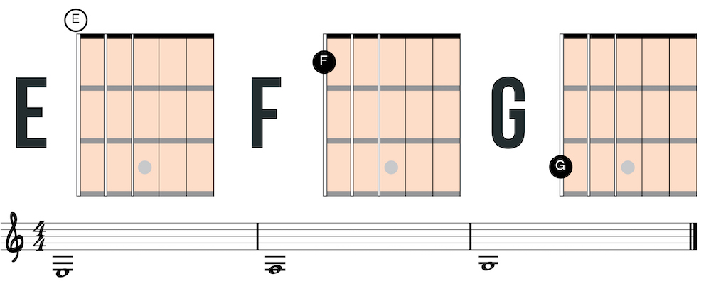
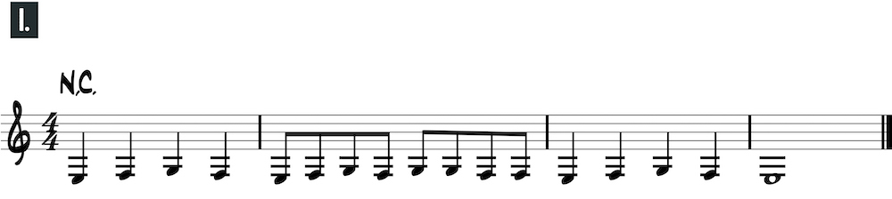
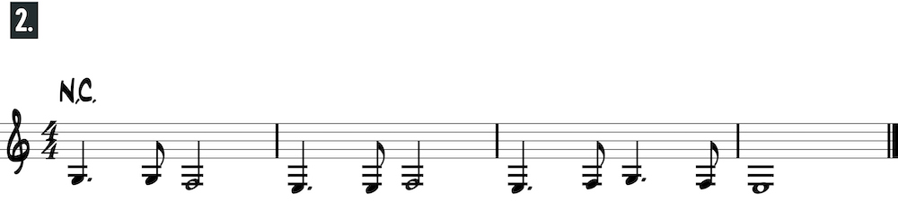
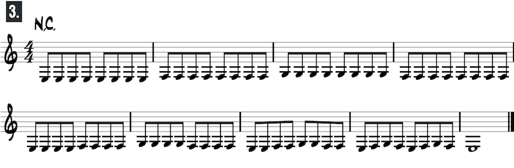
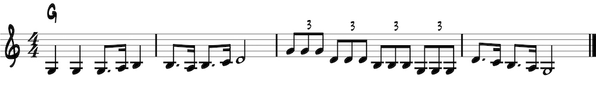
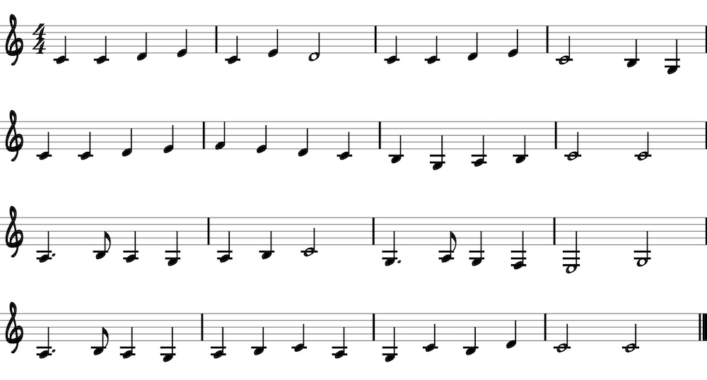
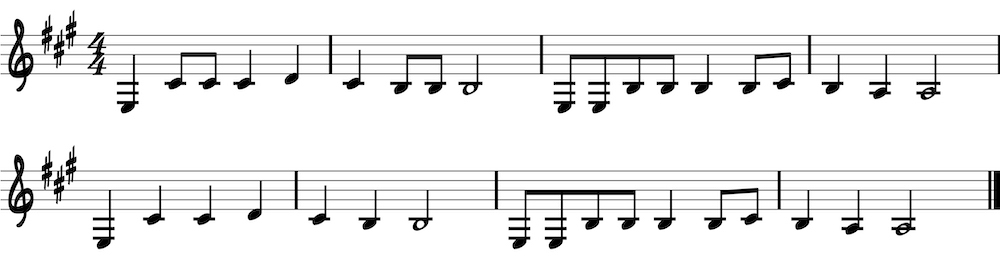

<h1>Sixth string: open position</h1>
<p>Play F on the first fret with the first finger and G on the third fret with the third finger.</p>




<h2>Row Row Row Your Boat</h2>

<h2>Yankee Doodle</h2>

<h2>Hush Little Baby</h2>
